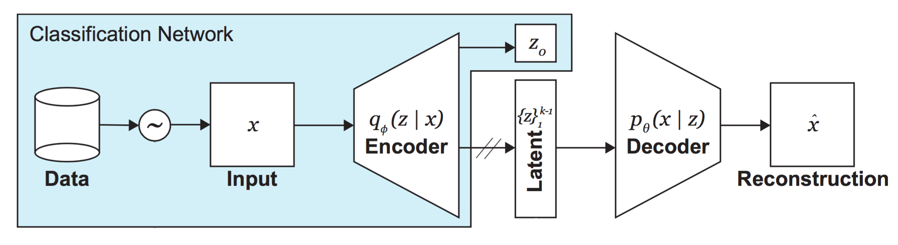

2023년 MIT에서 강의된 6.S191 강좌의 Lab의이해를 돕기위해 작성되었습니다.
Lab에 대해서는 이곳에서 확인가능하며, 해당 강좌는 여기서 확인가능합니다.
- Lab1-Part1 Intro to Tensorflow
- Lab1-Part2 Music Generation
- Lab2-Part1 MNIST
- Lab2-Part2 Diagnosing Bias
- Lab3-Part1 Introduction Caspa
- Lab3-Part2 Bias and Uncertainty
이번 과제에서는 Facial Detection System을 구성하고 이 모델에 Bias가 어떻게 구성되어있는지 확인해보겠습니다.
# Import Tensorflow 2.0
%tensorflow_version 2.x
import tensorflow as tf
import IPython
import functools
import matplotlib.pyplot as plt
import numpy as np
from tqdm import tqdm
# Download and import the MIT Introduction to Deep Learning package
!pip install mitdeeplearning
import mitdeeplearning as mdl4.1 Dataset
얼굴 인식 모델을 만들기 위해, 두가지 데이터를 사용할 것입니다:
- Positive Train : CelebA Dataset
- Negative Train : ImageNet
이 데이터를 통해 이미지가 얼굴인지 아닌지 맞추는 binary classification 모델을 만들도록 하겠습니다.
먼저 데이터를 다운받고 확인해봅시다.
# Get the training data: both images from CelebA and ImageNet
path_to_training_data = tf.keras.utils.get_file('train_face.h5', 'https://www.dropbox.com/s/hlz8atheyozp1yx/train_face.h5?dl=1')
# Instantiate a TrainingDatasetLoader using the downloaded dataset
loader = mdl.lab2.TrainingDatasetLoader(path_to_training_data)얼굴 인식 모델에서 Bias라 하면 어떤 것을 뜻할까요?
특정 성별 인종에 대한 분류기의 작동이 미흡하거나, 안경과 같은 악세서리를 착용했을 때 작동이 미흡한 경우를 뜻할 것입니다.
이는 잠재 공간에서 특정 부분이 희박하다는 것으로도 이해할 수 있습니다.
4.2 CNN Model
먼저 CNN 구조로 얼굴 인식 모델을 작성하겠습니다.
### Define the CNN model ###
n_filters = 12 # base number of convolutional filters
'''Function to define a standard CNN model'''
def make_standard_classifier(n_outputs=1):
Conv2D = functools.partial(tf.keras.layers.Conv2D, padding='same', activation='relu')
BatchNormalization = tf.keras.layers.BatchNormalization
Flatten = tf.keras.layers.Flatten
Dense = functools.partial(tf.keras.layers.Dense, activation='relu')
model = tf.keras.Sequential([
Conv2D(filters=1*n_filters, kernel_size=5, strides=2),
BatchNormalization(),
Conv2D(filters=2*n_filters, kernel_size=5, strides=2),
BatchNormalization(),
Conv2D(filters=4*n_filters, kernel_size=3, strides=2),
BatchNormalization(),
Conv2D(filters=6*n_filters, kernel_size=3, strides=2),
BatchNormalization(),
Flatten(),
Dense(512),
Dense(n_outputs, activation=None),
])
return model
standard_classifier = make_standard_classifier()### Train the standard CNN ###
# Training hyperparameters
batch_size = 32
num_epochs = 2 # keep small to run faster
learning_rate = 5e-4
optimizer = tf.keras.optimizers.Adam(learning_rate) # define our optimizer
loss_history = mdl.util.LossHistory(smoothing_factor=0.99) # to record loss evolution
plotter = mdl.util.PeriodicPlotter(sec=2, scale='semilogy')
if hasattr(tqdm, '_instances'): tqdm._instances.clear() # clear if it exists
@tf.function
def standard_train_step(x, y):
with tf.GradientTape() as tape:
# feed the images into the model
logits = standard_classifier(x)
# Compute the loss
loss = tf.nn.sigmoid_cross_entropy_with_logits(labels=y, logits=logits)
# Backpropagation
grads = tape.gradient(loss, standard_classifier.trainable_variables)
optimizer.apply_gradients(zip(grads, standard_classifier.trainable_variables))
return loss
# The training loop!
for epoch in range(num_epochs):
for idx in tqdm(range(loader.get_train_size()//batch_size)):
# Grab a batch of training data and propagate through the network
x, y = loader.get_batch(batch_size)
loss = standard_train_step(x, y)
# Record the loss and plot the evolution of the loss as a function of training
loss_history.append(loss.numpy().mean())
plotter.plot(loss_history.get())이제 모델을 평가해보겠습니다.
### Evaluation of standard CNN ###
# TRAINING DATA
# Evaluate on a subset of CelebA+Imagenet
(batch_x, batch_y) = loader.get_batch(5000)
y_pred_standard = tf.round(tf.nn.sigmoid(standard_classifier.predict(batch_x)))
acc_standard = tf.reduce_mean(tf.cast(tf.equal(batch_y, y_pred_standard), tf.float32))
print("Standard CNN accuracy on (potentially biased) training set: {:.4f}".format(acc_standard.numpy()))Standard CNN accuracy on (potentially biased) training set: 0.9976Bias 조사하기
CNN은 얼굴 인식과 같은 computer vision 문제에서 가장 많이 사용되는 구조일 것입니다.
이 모델은 광범위하게 사용됨에도 불구하고 빅테크 회사들 마저 구현한 모델의 편향으로 인해 어려움을 겪고 있습니다.
Buolamwini와 Gebru는 얼굴 인식 모델에서 피부색과 성별에 따라 정확도 차이가 매우 큼을 밝혀내기도 했습니다.
이러한 문제를 어떻게 해결할 수 있을까요?
가장 쉬운 방법 중 하나는 subclass를 생성하는 것일 겁니다. 훈련할 얼굴 이미지에 잠재적으로 생길만한 편향(인종 성별 모자 안경 등)을 고려하여 클래스를 부여하고 훈련시키는 것입니다.
그러나 이 방법은 매우 비효율적입니다. 그리고 예기치 못한 bias에 대해 처리할 방법이 없습니다.
조금 더 나은 방법이 있을까요?
우리는 이번 실습에서 VAE를 통해 더 나은 방법을 알아볼 것입니다.
VAE를 통해 잠재 공간 학습하기
VAE를 통해 이루고자 하는 목표는 얼굴 훈련 데이터에 대한 기본 잠재 공간의 표현을 학습하는 모델을 훈련하는 것입니다.
이렇게 학습된 표현은 데이터에서 어떤 특징이 과소 표현되거나 과대 표현되는지에 대한 정보를 제공합니다.
VAE는 인코더-디코더 구조를 사용하여 입력 데이터의 잠재적 표현을 학습합니다. 컴퓨터 비전의 맥락에서 인코더 네트워크는 입력 이미지를 받아 평균과 표준 편차로 정의된 일련의 변수로 인코딩한 다음 이러한 매개 변수로 정의된 분포에서 샘플링된 잠재 변수 집합을 생성합니다. 그런 다음 디코더 네트워크는 이러한 변수를 ’디코딩’하여 원본 이미지의 재구성을 생성하고, 이 재구성은 학습 중에 모델이 어떤 잠재 변수를 학습하는 것이 중요한지 식별하는 데 사용됩니다.

먼저 VAE의 Loss 함수에 대해 생각해 봅시다. 위의 그림에서와 같이 VAE는 정규 분포로 가정한 평균과 표준 편차를 학습하고, 이를 통해 기존의 이미지와 흡사한 이미지를 출력합니다. Loss는 이 두가지를 만족하기위해 Latent Loss와 Reconstruction Loss를 함께 최적화합니다.
Latent Loss는 VAE에서 학습된 분포가 정규분포에 가깝도록 학습합니다. 정규 분포와의 차이를 구하기 위해 Kullback-Leibler Divergence를 이용합니다. 쿨백-라이블러에 대한 내용은 링크를 참조 부탁드립니다.
\[L_{KL}(\mu, \sigma) = \frac{1}{2}\sum_{j=0}^{k-1} (\sigma_j + \mu_j^2 - 1 - \log{\sigma_j})\]
Reconsruction Loss는 단순히 만들어진 결과 이미지와 인풋 이미지의 차이의 절대값으로 정의합니다.
\[L_{x}{(x,\hat{x})} = ||x-\hat{x}||_1\]
\[L_{VAE} = c\cdot L_{KL} + L_{x}{(x,\hat{x})}\]
### Defining the VAE loss function ###
''' Function to calculate VAE loss given:
an input x,
reconstructed output x_recon,
encoded means mu,
encoded log of standard deviation logsigma,
weight parameter for the latent loss kl_weight
'''
def vae_loss_function(x, x_recon, mu, logsigma, kl_weight=0.0005):
# TODO: Define the latent loss. Note this is given in the equation for L_{KL}
# in the text block directly above
latent_loss = 0.5 * tf.reduce_sum(tf.exp(logsigma) + tf.square(mu) - 1.0 - logsigma, axis=1)
# TODO: Define the reconstruction loss as the mean absolute pixel-wise
# difference between the input and reconstruction. Hint: you'll need to
# use tf.reduce_mean, and supply an axis argument which specifies which
# dimensions to reduce over. For example, reconstruction loss needs to average
# over the height, width, and channel image dimensions.
# https://www.tensorflow.org/api_docs/python/tf/math/reduce_mean
reconstruction_loss = tf.reduce_mean(tf.abs(x-x_recon), axis=(1,2,3))
# TODO: Define the VAE loss. Note this is given in the equation for L_{VAE}
# in the text block directly above
vae_loss = kl_weight * latent_loss + reconstruction_loss
return vae_loss이제 샘플링과 reparameterization에 대해 알아보겠습니다.
VAE는 학습된 잠재 변수를 샘플링하기 위해 “재파라미터화 트릭”을 사용합니다.
VAE 인코더는 각 잠재 변수에 대해 단일 실수 벡터를 생성하는 대신 가우스 분포를 대략 따르도록 제약된 평균 벡터와 표준편차 벡터를 생성합니다. 그런 다음 가우스 분포에서 노이즈 값 ϵ를 샘플링한 다음 표준 편차에 따라 스케일링하고 평균을 다시 추가하여 결과를 샘플링된 잠재 벡터로 출력합니다. 이를 ϵ∼N(0,(I))을 샘플링하는 잠재 변수 z에 대해 공식화하면 다음과 같습니다:
\[z = \mu + e^{\left(\frac{1}{2} \cdot \log{\Sigma}\right)}\circ \epsilon\]
여기서 μ는 평균이고 Σ는 공분산 행렬입니다. 이를 통해 VAE의 손실 함수를 깔끔하게 정의하고, 무작위로 샘플링된 잠재 변수를 생성하고, 역전파를 통해 학습할 수 있습니다
### VAE Sampling ###
"""Sample latent variables via reparameterization with an isotropic unit Gaussian.
# Arguments
z_mean, z_logsigma (tensor): mean and log of standard deviation of latent distribution (Q(z|X))
# Returns
z (tensor): sampled latent vector
"""
def sampling(z_mean, z_logsigma):
# By default, random.normal is "standard" (ie. mean=0 and std=1.0)
batch, latent_dim = z_mean.shape
epsilon = tf.random.normal(shape=(batch, latent_dim))
# TODO: Define the reparameterization computation!
# Note the equation is given in the text block immediately above.
z = z_mean + tf.math.exp(0.5 * z_logsigma) * epsilon
return zSemi-Supervised Variational Autoencoder (SS-VAE)
이제 CNN과 VAE에 대해 어느정도 이해가 되었을 것이라 생각합니다.
얼굴 인식 작업에 대한 분류 결정을 출력하고 모델의 편향이 어디에서 비롯되었는지 분석하기 위해 지도 구성 요소가 있는 VAE를 개발할 것입니다. 부올람위니와 게브루의 연구와 같은 이전 연구에서는 얼굴 인식 모델에 편향이 발생할 수 있는 두 가지 범주로 피부색과 성별에 초점을 맞췄지만, 라벨이 지정되지 않은 다른 특징들도 편향되어 분류 성능이 저하될 수 있습니다. 이러한 잠재적 특징을 학습할 수 있도록 반지도형 VAE(SS-VAE)를 구축할 예정입니다.

SS-VAE를 지도 분류 문제, 즉 얼굴 감지 작업에 적용해 보겠습니다. 중요한 점은 SS-VAE 아키텍처의 인코더 부분이 클래스 예측(얼굴 또는 얼굴이 아님)에 해당하는 단일 감독 변수인 \(z_o\) 를 출력한다는 점입니다. 일반적으로 VAE는 클래스 예측과 같은 감독 변수를 출력하도록 훈련되지 않습니다. 이것이 SS-VAE와 기존 VAE의 주요 차이점입니다.
이진 분류 문제에 대해 모델을 훈련하더라도 잠재적인 편견을 발견하는 데 관심이 있기 때문에 얼굴의 잠재적 표현만 학습하고자 한다는 점을 기억해야합니다. 즉, 이미지가 얼굴일 때는 잠재적 표현을 학습하고, 얼굴이 아닐 때에는 \(z_o\)를 출력한 이후 종료되어야 합니다.
SS-VAE의 Loss 함수를 정의해보겠습니다. 기존 VAE와 달리 Classificaion이 추가되었기에 이에 대한 Loss 함수가 추가되어야 합니다. 또한 이미지가 얼굴일 때만 VAE의 Loss가 계산되어야 할 것입니다.
즉, classification loss \(L_y\), VAE loss \({I}_f(y)\Big[L_{VAE}\Big]\)가 필요하며, \({I}_f(y)\) 는 1 일 때 얼굴, 0일 때 얼굴이 아는 다른 이미지여야 합니다.
\[L_{total} = L_y(y,\hat{y}) + {I}_f(y)\Big[L_{VAE}\Big]\]
### Loss function for SS-VAE ###
"""Loss function for SS-VAE.
# Arguments
x: true input x
x_pred: reconstructed x
y: true label (face or not face)
y_logit: predicted labels
mu: mean of latent distribution (Q(z|X))
logsigma: log of standard deviation of latent distribution (Q(z|X))
# Returns
total_loss: SS-VAE total loss
classification_loss: SS-VAE classification loss
"""
def ss_vae_loss_function(x, x_pred, y, y_logit, mu, logsigma):
# TODO: call the relevant function to obtain VAE loss, defined earlier in the lab
vae_loss = vae_loss_function(x, x_pred, mu, logsigma) # TODO
# TODO: define the classification loss using sigmoid_cross_entropy
# https://www.tensorflow.org/api_docs/python/tf/nn/sigmoid_cross_entropy_with_logits
classification_loss = tf.nn.sigmoid_cross_entropy_with_logits(labels=y, logits=y_logit) # TODO
# Use the training data labels to create variable face_indicator:
# indicator that reflects which training data are images of faces
face_indicator = tf.cast(tf.equal(y, 1), tf.float32)
# TODO: define the SS-VAE total loss! Use tf.reduce_mean to average over all
# samples
total_loss = tf.reduce_mean(
classification_loss +
face_indicator * vae_loss
)
return total_loss, classification_loss, vae_loss이제 모델을 구성해보도록 합시다
### Define the decoder portion of the SS-VAE ###
def make_face_decoder_network(n_filters=12):
# Functionally define the different layer types we will use
Conv2DTranspose = functools.partial(tf.keras.layers.Conv2DTranspose, padding='same', activation='relu')
BatchNormalization = tf.keras.layers.BatchNormalization
Flatten = tf.keras.layers.Flatten
Dense = functools.partial(tf.keras.layers.Dense, activation='relu')
Reshape = tf.keras.layers.Reshape
# Build the decoder network using the Sequential API
decoder = tf.keras.Sequential([
# Transform to pre-convolutional generation
Dense(units=4*4*6*n_filters), # 4x4 feature maps (with 6N occurances)
Reshape(target_shape=(4, 4, 6*n_filters)),
# Upscaling convolutions (inverse of encoder)
Conv2DTranspose(filters=4*n_filters, kernel_size=3, strides=2),
Conv2DTranspose(filters=2*n_filters, kernel_size=3, strides=2),
Conv2DTranspose(filters=1*n_filters, kernel_size=5, strides=2),
Conv2DTranspose(filters=3, kernel_size=5, strides=2),
])
return decoder### Defining and creating the SS-VAE ###
class SS_VAE(tf.keras.Model):
def __init__(self, latent_dim):
super(SS_VAE, self).__init__()
self.latent_dim = latent_dim
# Define the number of outputs for the encoder. Recall that we have
# `latent_dim` latent variables, as well as a supervised output for the
# classification.
num_encoder_dims = 2*self.latent_dim + 1
self.encoder = make_standard_classifier(num_encoder_dims)
self.decoder = make_face_decoder_network()
# function to feed images into encoder, encode the latent space, and output
# classification probability
def encode(self, x):
# encoder output
encoder_output = self.encoder(x)
# classification prediction
y_logit = tf.expand_dims(encoder_output[:, 0], -1)
# latent variable distribution parameters
z_mean = encoder_output[:, 1:self.latent_dim+1]
z_logsigma = encoder_output[:, self.latent_dim+1:]
return y_logit, z_mean, z_logsigma
# Decode the latent space and output reconstruction
def decode(self, z):
# TODO: use the decoder (self.decoder) to output the reconstruction
reconstruction = self.decoder(z) # TODO
return reconstruction
# The call function will be used to pass inputs x through the core VAE
def call(self, x):
# Encode input to a prediction and latent space
y_logit, z_mean, z_logsigma = self.encode(x)
# TODO: call the sampling function that you created above using
# z_mean and z_logsigma
z = sampling(z_mean, z_logsigma) # TODO
# TODO: reconstruction
recon = self.decode(z) # TODO
return y_logit, z_mean, z_logsigma, recon
# Predict face or not face logit for given input x
def predict(self, x):
y_logit, z_mean, z_logsigma = self.encode(x)
return y_logit
ss_vae = SS_VAE(latent_dim=32)### Training the SS-VAE ###
# Hyperparameters
batch_size = 32
learning_rate = 5e-4
latent_dim = 32
# SS-VAE needs slightly more epochs to train since its more complex than
# the standard classifier so we use 6 instead of 2
num_epochs = 6
# instantiate a new SS-VAE model and optimizer
ss_vae = SS_VAE(latent_dim)
optimizer = tf.keras.optimizers.Adam(learning_rate)
# To define the training operation, we will use tf.function which is a powerful tool
# that lets us turn a Python function into a TensorFlow computation graph.
@tf.function
def ss_vae_train_step(x, y):
with tf.GradientTape() as tape:
# Feed input x into ss_vae. Note that this is using the SS_VAE call function!
y_logit, z_mean, z_logsigma, x_recon = ss_vae(x)
'''TODO: call the SS_VAE loss function to compute the loss'''
loss, class_loss, _ = ss_vae_loss_function(x, x_recon, y, y_logit, z_mean, z_logsigma) # TODO
'''TODO: use the GradientTape.gradient method to compute the gradients.
Hint: this is with respect to the trainable_variables of the SS_VAE.'''
grads = tape.gradient(loss, ss_vae.trainable_variables) # TODO
# apply gradients to variables
optimizer.apply_gradients(zip(grads, ss_vae.trainable_variables))
return loss
# get training faces from data loader
all_faces = loader.get_all_train_faces()
if hasattr(tqdm, '_instances'): tqdm._instances.clear() # clear if it exists
# The training loop -- outer loop iterates over the number of epochs
for i in range(num_epochs):
IPython.display.clear_output(wait=True)
print("Starting epoch {}/{}".format(i+1, num_epochs))
# get a batch of training data and compute the training step
for j in tqdm(range(loader.get_train_size() // batch_size)):
# load a batch of data
(x, y) = loader.get_batch(batch_size)
# loss optimization
loss = ss_vae_train_step(x, y)
# plot the progress every 200 steps
if j % 500 == 0:
mdl.util.plot_sample(x, y, ss_vae)SS-VAE를 활용하여 bias 발견하기
이제 SS-VAE의 학습을 모두 마쳤으니, bias를 발견해봅시다.
SS-VAE를 훈련하려면 VAE 재구성 손실과 지도 분류 손실이 모두 필요했습니다. VAE 재구성 손실은 모델이 특정 입력 데이터를 얼마나 잘 처리할 수 있는지를 반영하며, 재구성 손실이 높을수록 모델이 특정 예제를 학습하기가 더 어려워집니다.
그렇다면 재구성 하기 힘든 결과일수록 학습이 덜 된 이미지라고 할 수 있겠죠. 즉, 재구성 손실이 높은 이미지들의 특징을 확인하여 우리가 훈련한 모델의 어떠한 부분이 부족한지 알 수 있습니다.
### Linking model performance to uncertainty and bias
# Load a random sample of 5000 faces from our dataset and compute the model performance on them
(x, y) = loader.get_batch(5000, only_faces=True)
y_logit, z_mean, z_logsigma, x_recon = ss_vae(x)
loss, class_loss, vae_loss = ss_vae_loss_function(x, x_recon, y, y_logit, z_mean, z_logsigma)
# Sort the results by the vae loss scores
vae_loss = vae_loss.numpy()
ind = np.argsort(vae_loss, axis=None)
# Plot the 25 samples with the highest and lowest reconstruction losses
fig, ax = plt.subplots(1, 2, figsize=(16, 8))
ax[0].imshow(mdl.util.create_grid_of_images(x[ind[:25]]))
ax[0].set_title("Samples with the lowest reconstruction loss \n" +
f"Average recon loss: {np.mean(vae_loss[ind[:25]]):.2f}")
ax[1].imshow(mdl.util.create_grid_of_images(x[ind[-25:]]))
ax[1].set_title("Samples with the highest reconstruction loss \n" +
f"Average recon loss: {np.mean(vae_loss[ind[-25:]]):.2f}");
이제 우리는 어떠한 이미지가 재구성 손실이 높은지, 낮은지 확인할 수 있습니다.
각 경우에 대해 특징을 발견하실 수 있나요?
제가 보았을 때 재구성 손실이 낮은 예시의 경우 대부분 정면을 바라보고, 안경을 쓰지 않았고, 백인인 반면에
재구성 손일이 높은 예시의 경우 측면을 바라보고, 안경을 쓰고, 타 인종인 경우가 많다고 생각하였습니다.